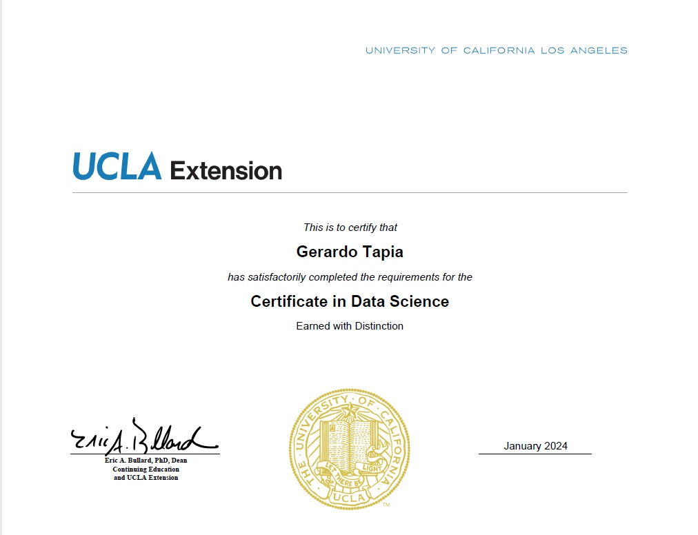
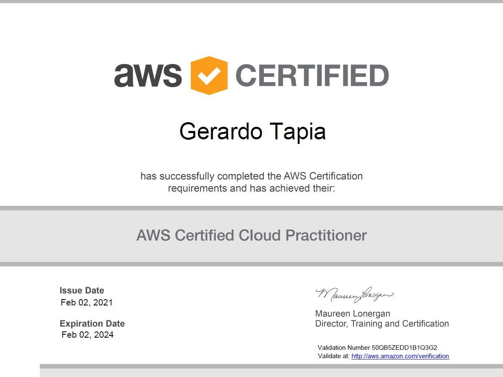
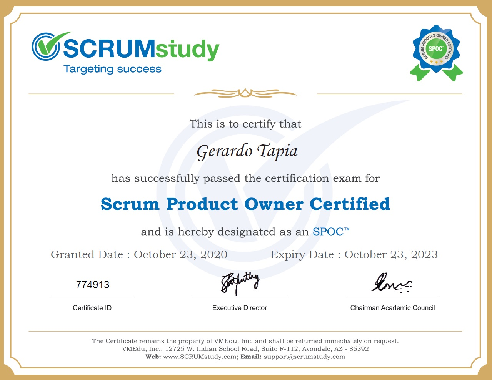

Certifications
Data Science and Machine Learning: Making Data-Driven Decisions by MTI IDSS
Data Science by UCLA

Cloud Practitioner by AWS

Scrum Product Owner Certified by SCRUMStudy

Scrum Fundamentals Certified by SCRUMStudy
Six Sigma Yellow Belt by SixSigmaStudy
ITIL Foundation Certificate in IT Service Management by PeopleCERT